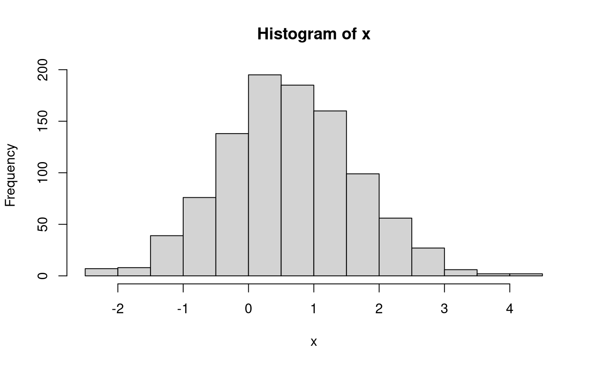
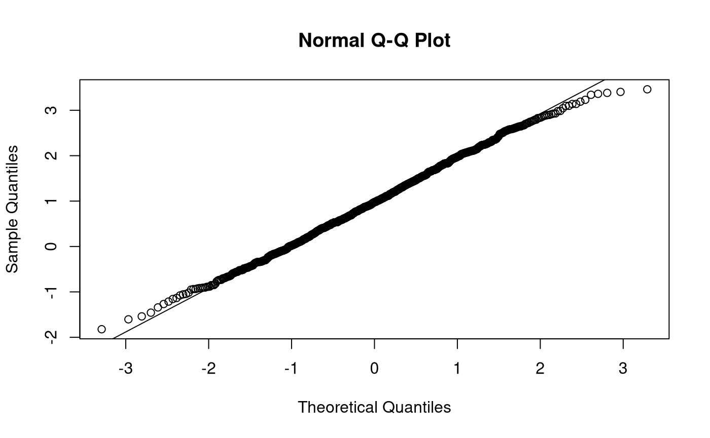
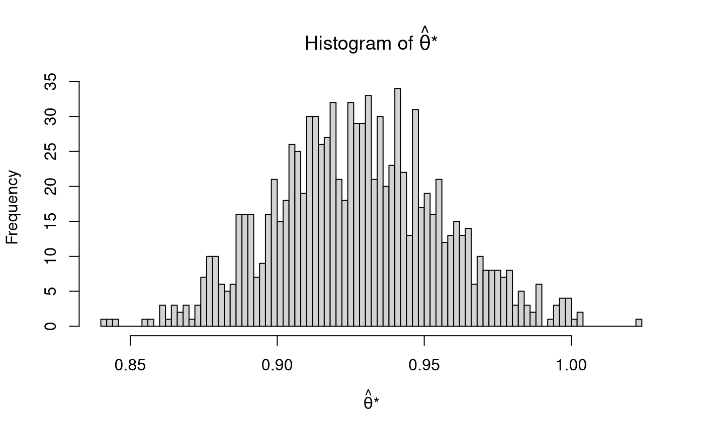
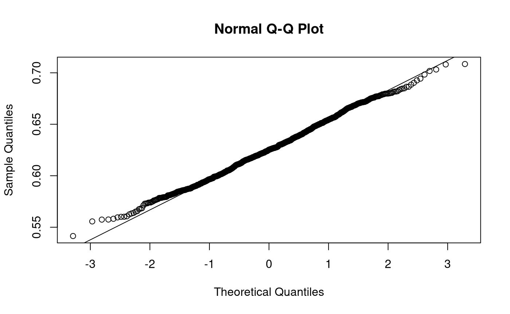

vignettes/tests/test_pb_univ.Rmd
test_pb_univ.Rmdn <- 1000 df <- n - 1 B <- 1000 mu <- runif( n = 1, min = .5, max = 1 ) theta <- mu sigma2 <- runif( n = 1, min = .5, max = 1 ) sigma <- sqrt(sigma2) var_thetahat <- sigma2 / n se_thetahat <- sqrt(var_thetahat) # Parameters Variable <- c( "`mu`", "`sigma2`", "`sigma2`" ) Description <- c( "Population mean.", "Population variance.", "Population standard deviation." ) Notation <- c( "$\\mu$", "$\\sigma^2$", "$\\sigma$" ) Value <- c( mu, sigma2, sigma ) knitr::kable( x = data.frame( Variable, Description, Notation, Value ), row.names = FALSE, caption = "Population Parameters" )
| Variable | Description | Notation | Value |
|---|---|---|---|
mu |
Population mean. | \(\mu\) | 0.6238376 |
sigma2 |
Population variance. | \(\sigma^2\) | 0.9901523 |
sigma2 |
Population standard deviation. | \(\sigma\) | 0.9950640 |
# Sampling distribution of theta Variable <- c( "`n`", "`theta`", "`var_thetahat`", "`se_thetahat`" ) Description <- c( "Sample size.", "Population mean.", "Variance of the sampling distribution of the mean.", "Standard error of the mean." ) Notation <- c( "$n$", "$\\theta = \\mu$", "$\\mathrm{Var} \\left( \\hat{\\theta} \\right) = \\frac{ \\sigma^2 }{n}$", "$\\mathrm{se} \\left( \\hat{\\theta} \\right) = \\frac{ \\sigma }{\\sqrt{n}}$" ) Value <- c( n, theta, var_thetahat, se_thetahat ) knitr::kable( x = data.frame( Variable, Description, Notation, Value ), row.names = FALSE, caption = "Sampling Distribution of $\\hat{\\theta}$ with Known Parameters" )
| Variable | Description | Notation | Value |
|---|---|---|---|
n |
Sample size. | \(n\) | 1000.0000000 |
theta |
Population mean. | \(\theta = \mu\) | 0.6238376 |
var_thetahat |
Variance of the sampling distribution of the mean. | \(\mathrm{Var} \left( \hat{\theta} \right) = \frac{ \sigma^2 }{n}\) | 0.0009902 |
se_thetahat |
Standard error of the mean. | \(\mathrm{se} \left( \hat{\theta} \right) = \frac{ \sigma }{\sqrt{n}}\) | 0.0314667 |
x <- rnorm( n = n, mean = mu, sd = sigma ) str(x) #> num [1:1000] -0.206 1.145 0.325 0.889 1.863 ... hist(x)


muhat <- mean(x) thetahat <- muhat sigma2hat <- var(x) sigmahat <- sqrt(sigma2hat) varhat_thetahat <- sigma2hat / n sehat <- sqrt(varhat_thetahat) Variable <- c( "`n`", "`thetahat`", "`sigma2hat`", "`sigmahat`", "`varhat_thetahat`", "`sehat`" ) Description <- c( "Sample size.", "Sample mean.", "Sample variance.", "Sample standard deviation.", "Estimate of the variance of the sampling distribution of the mean.", "Estimate of the standard error of the mean." ) Notation <- c( "$n$", "$\\hat{\\theta} = \\hat{\\mu} = \\frac{1}{n} \\sum_{i = 1}^{n} x_i$", "$\\hat{\\sigma}^2 = \\frac{1}{n - 1} \\sum_{i = 1}^{n} \\left( x_i - \\hat{\\mu} \\right)^2$", "$\\hat{\\sigma} = \\sqrt{\\frac{1}{n - 1} \\sum_{i = 1}^{n} \\left( x_i - \\hat{\\mu} \\right)^2}$", "$\\widehat{\\mathrm{Var}} \\left( \\hat{\\theta} \\right) = \\frac{ \\hat{\\sigma}^2 }{n}$", "$\\widehat{\\mathrm{se}} \\left( \\hat{\\theta} \\right) = \\frac{ \\hat{\\sigma} }{\\sqrt{n}}$" ) Value <- c( n, thetahat, sigma2hat, sigmahat, varhat_thetahat, sehat ) knitr::kable( x = data.frame( Variable, Description, Notation, Value ), row.names = FALSE, caption = "Sample Statistics (Parameter Estimates)" )
| Variable | Description | Notation | Value |
|---|---|---|---|
n |
Sample size. | \(n\) | 1000.0000000 |
thetahat |
Sample mean. | \(\hat{\theta} = \hat{\mu} = \frac{1}{n} \sum_{i = 1}^{n} x_i\) | 0.6339660 |
sigma2hat |
Sample variance. | \(\hat{\sigma}^2 = \frac{1}{n - 1} \sum_{i = 1}^{n} \left( x_i - \hat{\mu} \right)^2\) | 1.0581568 |
sigmahat |
Sample standard deviation. | \(\hat{\sigma} = \sqrt{\frac{1}{n - 1} \sum_{i = 1}^{n} \left( x_i - \hat{\mu} \right)^2}\) | 1.0286675 |
varhat_thetahat |
Estimate of the variance of the sampling distribution of the mean. | \(\widehat{\mathrm{Var}} \left( \hat{\theta} \right) = \frac{ \hat{\sigma}^2 }{n}\) | 0.0010582 |
sehat |
Estimate of the standard error of the mean. | \(\widehat{\mathrm{se}} \left( \hat{\theta} \right) = \frac{ \hat{\sigma} }{\sqrt{n}}\) | 0.0325293 |
x_star <- pb_univ( rFUN = rnorm, n = n, B = B, mean = thetahat, sd = sigmahat ) thetahatstar <- sapply( X = x_star, FUN = mean ) mean_thetahatstar <- mean(thetahatstar) var_thetahatstar <- var(thetahatstar) sd_thetahatstar <- sqrt(var_thetahatstar) Variable <- c( "`B`", "`mean_thetahatstar`", "`var_thetahatstar`", "`sd_thetahatstar`" ) Description <- c( "Number of bootstrap samples.", "Mean of $B$ sample means.", "Variance of $B$ sample means.", "Standard deviation of $B$ sample means." ) Notation <- c( "$B$", "$\\hat{\\theta}^{*} \\left( \\cdot \\right) = \\frac{1}{B} \\sum_{b = 1}^{B} \\hat{\\theta}^{*} \\left( b \\right)$", "$\\widehat{\\mathrm{Var}}_{\\mathrm{B}} \\left( \\hat{\\theta} \\right) = \\frac{1}{B - 1} \\sum_{b = 1}^{B} \\left[ \\hat{\\theta}^{*} \\left( b \\right) - \\hat{\\theta}^{*} \\left( \\cdot \\right) \\right]^2$", "$\\widehat{\\mathrm{se}}_{\\mathrm{B}} \\left( \\hat{\\theta} \\right) = \\sqrt{ \\frac{1}{B - 1} \\sum_{b = 1}^{B} \\left[ \\hat{\\theta}^{*} \\left( b \\right) - \\hat{\\theta}^{*} \\left( \\cdot \\right) \\right]^2 }$" ) Value <- c( B, mean_thetahatstar, var_thetahatstar, sd_thetahatstar ) knitr::kable( x = data.frame( Variable, Description, Notation, Value ), row.names = FALSE, caption = "Nonparametric Bootstrapping Results" )
| Variable | Description | Notation | Value |
|---|---|---|---|
B |
Number of bootstrap samples. | \(B\) | 1000.0000000 |
mean_thetahatstar |
Mean of \(B\) sample means. | \(\hat{\theta}^{*} \left( \cdot \right) = \frac{1}{B} \sum_{b = 1}^{B} \hat{\theta}^{*} \left( b \right)\) | 0.6325867 |
var_thetahatstar |
Variance of \(B\) sample means. | \(\widehat{\mathrm{Var}}_{\mathrm{B}} \left( \hat{\theta} \right) = \frac{1}{B - 1} \sum_{b = 1}^{B} \left[ \hat{\theta}^{*} \left( b \right) - \hat{\theta}^{*} \left( \cdot \right) \right]^2\) | 0.0009688 |
sd_thetahatstar |
Standard deviation of \(B\) sample means. | \(\widehat{\mathrm{se}}_{\mathrm{B}} \left( \hat{\theta} \right) = \sqrt{ \frac{1}{B - 1} \sum_{b = 1}^{B} \left[ \hat{\theta}^{*} \left( b \right) - \hat{\theta}^{*} \left( \cdot \right) \right]^2 }\) | 0.0311257 |
hist( thetahatstar, breaks = 100, main = expression( paste( "Histogram of ", hat(theta), "*" ) ), xlab = expression( paste( hat(theta), "*" ) ) )


wald_out <- wald( thetahat = thetahat, sehat = sehat, eval = TRUE ) wald_out_t <- wald( thetahat = thetahat, sehat = sehat, dist = "t", df = df, eval = TRUE )
pc_out <- pc( thetahatstar = thetahatstar, thetahat = thetahat, wald = TRUE, eval = TRUE )
bc_out <- bc( thetahatstar = thetahatstar, thetahat = thetahat, wald = TRUE, eval = TRUE )
bca_out <- bca( thetahatstar = thetahatstar, thetahat = thetahat, data = x, fitFUN = mean, wald = TRUE, eval = TRUE )
knitr::kable( x = as.data.frame( rbind( wald = wald_out, wald_t = wald_out_t, pc = pc_out, bc = bc_out, bca = bca_out ) ), caption = "Confidence Intervals" )
| statistic | p | se | ci_0.05 | ci_0.5 | ci_2.5 | ci_97.5 | ci_99.5 | ci_99.95 | zero_hit_0.001 | zero_hit_0.01 | zero_hit_0.05 | theta_hit_0.001 | theta_hit_0.01 | theta_hit_0.05 | length_0.001 | length_0.01 | length_0.05 | shape_0.001 | shape_0.01 | shape_0.05 | |
|---|---|---|---|---|---|---|---|---|---|---|---|---|---|---|---|---|---|---|---|---|---|
| wald | 19.48906 | 0 | 0.0325293 | 0.5269274 | 0.5501760 | 0.5702097 | 0.6977223 | 0.7177560 | 0.7410046 | 0 | 0 | 0 | 0 | 0 | 0 | 0.2140772 | 0.1675800 | 0.1275126 | 1.0000000 | 1.0000000 | 1.0000000 |
| wald_t | 19.48906 | 0 | 0.0325293 | 0.5266097 | 0.5500156 | 0.5701324 | 0.6977996 | 0.7179164 | 0.7413223 | 0 | 0 | 0 | 0 | 0 | 0 | 0.2147126 | 0.1679007 | 0.1276673 | 1.0000000 | 1.0000000 | 1.0000000 |
| pc | 20.36794 | 0 | 0.0311257 | 0.5058686 | 0.5514285 | 0.5720795 | 0.6927242 | 0.7084344 | 0.7302897 | 0 | 0 | 0 | 0 | 0 | 0 | 0.2244211 | 0.1570059 | 0.1206447 | 0.7519568 | 0.9022362 | 0.9494521 |
| bc | 20.36794 | 0 | 0.0311257 | 0.5106631 | 0.5536433 | 0.5735713 | 0.6936321 | 0.7086115 | 0.7315490 | 0 | 0 | 0 | 0 | 0 | 0 | 0.2208859 | 0.1549681 | 0.1200608 | 0.7914092 | 0.9293198 | 0.9879364 |
| bca | 20.36794 | 0 | 0.0311257 | 0.5109398 | 0.5536755 | 0.5736374 | 0.6936748 | 0.7087485 | 0.7316078 | 0 | 0 | 0 | 0 | 0 | 0 | 0.2206680 | 0.1550730 | 0.1200374 | 0.7936666 | 0.9313998 | 0.9897273 |
test_that("mean", { expect_equivalent( thetahat, mean_thetahatstar, tolerance = 0.01 ) })
test_that("se", { expect_equivalent( se_thetahat, sd_thetahatstar, tolerance = 0.01 ) })